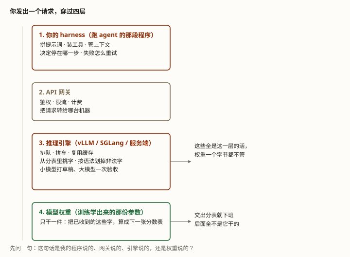

同一段提示词，换个产品答案就变了 —— 因为你看到的很多「模型的本事」，其实是外面几层软件干的。
你有没有过这种时刻：把同一段提示词扔进两个不同的产品，一个好好地给你 JSON，另一个让你自己修格式。或者同一道题，一个产品三秒答完但说错了，另一个三十秒才开口、结果是对的。
大多数人第一反应是「它们的模型不一样」。但真实原因常常是：模型一样，围着它的软件不一样。
拆穿了就是一句大白话：你从接口上看到的每一个行为，背后都有一个人在干活。你要分清是谁。那个人的名字，叫推理引擎。
学完这课，你能：看到一个不对劲的行为，先判断它出自哪一层；并且知道四条跟 agent 直接相关的坑 —— 以及其中两条的正确修法根本不在模型身上。
整门课只问一句话：这件事，是哪一层做的？
你发出的一个请求，其实穿过了四层。每层都干自己的活、干完交给下一层。模型只占最里面那一层，而且只干一件很窄的事。
先把四层摆出来。从上到下（也就是从外到里）是：① 你的程序（harness） · ② API 网关 · ③ 推理引擎 · ④ 模型权重。

逐层点名，看清各自的领地：
| 这一层 | 它真正干的活 |
|---|---|
| 你的 harness 跑 agent 的那段程序 |
拼提示词 · 装上工具 · 管上下文 · 决定什么时候停 · 失败了自己重试。Agent 原理篇第 6 课讲的就是它 |
| API 网关 大多数人不把它当一层 |
鉴权 · 限流 · 计费 · 决定把你的请求转给哪台机器 |
| 推理引擎 本课的主角 |
排队 · 拼车 · 复用缓存（第 3 课、第 4 课）· 从分表里挑字（第 1 课进阶）· 按语法划掉非法字 · 打草稿加速 |
| 模型权重 训练学出来的那份参数 |
只干一件：把已经收到的这些字，算成下一张分数表。交出这张表，它就下班了 |
最后那行值得停一下。第 1 课那张流水图的底色带就钉着这条边界：从「查嵌入表」到「原始分」之间是模型，之后 softmax、挑字、拼字符串，全不是它。模型交出的是一张「哪个字有多少分」的表 —— 至于从这张表里挑哪个字，它说了不算。
常见的说法是「Agent ＝ 模型 ＋ 外壳」，把世界切成两块。可你排查问题的时候，需要的不止那条缝 —— 你需要知道服务端那边还有一层叫引擎。
举个你已经遇过的：「同一个模型换一家部署，同样的参数不保证挑出一模一样的字」（第 1 课进阶 Q10）。那句话里的「换一家部署」，换掉的就是引擎这一层。
引擎不是一样神秘的东西。它干的活可以归成四类，而前三类你已经学过了：
top_p、top_k、种子都是它执行的旋钮（速查页）。你会发现「同一个模型，两次答案不一样」这件事，根源就在这里：它本来就不该一样。挑字是引擎在动手，而不同引擎的默认值、精度、执行顺序都可能不同。
第 1 课那张分数表上，模型给整张词表都打了分。如果你要的是一份格式严格的 JSON，那么大部分字都是「拼下去就废了」的 —— 但它们照样在表上、照样有分数。
引擎的新本事是：在挑字之前，先拿一张语法规则把所有「拼下去会废」的字从表上划掉，只在剩下的里面挑。这一招叫约束解码（constrained decoding），各家给它起的用户侧名字是结构化输出（structured outputs）。
Anthropic 官方文档的原话是：结构化输出「通过约束解码来保证回答符合 schema」。另一家 vLLM 的文档写得更直白：它的后端就是专门干这个的引擎，作用是「保证输出 100% 的结构正确」。
这里的关键是「保证」两个字。它不是「让模型更小心地写对」，而是在数学上让写错这条路不存在 —— 错字根本没有出现在候选里。Anthropic 也把这句写进了文档：开了之后不会再有 JSON.parse() 的报错。
但这个保证有一个例外，值得知道：模型拒答的时候，拒答那句话优先于格式约束 —— 那次回答照样合法地告诉你「我不答」，只是不是你要的形状。所以代码里仍然要检查「我到底有没有拿到数据」，不能假设开了就一定有。
要先把语法「编译」成机器能跑的规则。Anthropic 文档给了三条实情：同一个 schema 第一次用时会多花一点时间（正在编译）· 编译结果按 24 小时缓存 · 改了 schema 就得重编，而改 schema 还会让这一轮对话的前缀缓存作废。
还有一条容易忽略的：schema 太复杂会被直接拒掉，官方给的说法是「编译不出来」，另配一个 180 秒的兜底超时。所以参数别一口气堆满——尤其可选参数别乱加，官方明说每加一个可选参数，编译要付出的代价会翻一倍级别。
另有一件事，属于同一层但方向相反：引擎还能拿小模型打草稿、大模型一次验收，以此加快速度（术语表）。这招叫投机解码，它的卖点恰恰是「输出完全不变」 —— 论文的原话是「在不改变任何输出的前提下更快地采样」，在 T5-XXL 上测到 2～3 倍。
为什么这值得知道？因为它是本课的一个反证：引擎可以大幅改变速度，却不该改变答案。上面那个「按语法划字」的招，性质就完全不同 —— 它就是在改答案（只是改成「你要求的那个形状」）。一个是加速，一个是改行为，别混成一件。
前面是地图，这四节是拿地图去排查。每一条的修法都不在模型身上 —— 这是本课最实用的部分。
你在Agent 原理篇第 2 课学到的流程是：模型说「要调哪个工具、参数是什么」，你的代码去解析它、去执行。Anthropic 文档开头写的就是这个痛点：不开结构化输出，Claude 会吐出坏 JSON 和不合法的工具参数，让你的程序崩掉 —— 光是提示词写得再仔细也躲不掉。
所以修法不是改提示词、不是换更大的模型，而是让接口帮你把格式钉住。Anthropic 还有一条更直接的功能：工具参数也能这么钉（原话是「用语法约束采样来强制工具参数符合 JSON Schema」），和结构化输出一起用，就能既要可靠的工具调用，又要可靠的最终答案。
一句要记住的话：「模型很听我的话、格式很稳」这个结论，前提常常是接口帮你钉着格式。把它当成模型的功劳，你就找不到修法了。
你可能会以为模型自己知道什么时候说完了。不是的。每次回答回来都带一个字段说明「为什么停了」，Anthropic 把它列成一张小表：答完了 · 撞到上限了 · 碰上了你设的停止字 · 要调工具 · 拒答 · 把上下文窗口填满了。
对 agent 来说，其中一条要命：如果撞上限时那份回答里有个没写完的工具调用，那份工具调用是坏的，直接执行会出错。官方给的处置是把上限调大、重发一次。
也就是说：「工具调用参数不完整」有一种成因不在模型，在引擎那层的上限设置。遇到这类坏调用，先看你给的上限够不够，再去怀疑模型。
服务商有两种常见报错，含义完全不同，处置也不同：
还有一条能省你事的：官方 SDK 会自己重试 —— 连接错误、限流、5xx 这些临时故障，它默认退避重试两次，而且会听服务端给的「等多久」提示。所以你手写的那层重试，很可能是在它之上又叠了一遍。
这属于哪一层：429 来自网关（它管配额和花费上限），529 来自引擎（它的机器忙不过来）。模型在这两件事上完全无辜。
第 3 课实测过：只改提示词开头一处，成本差 3.7 倍。同样的道理在延迟上也成立 —— 命中缓存的那次请求，首字来得快得多，而这不是因为模型更快。
所以做对比时有个坑：拿命中缓存的一次和没命中的一次比速度，结论是假的。要比就得两边都命中，或者两边都没命中。
上面三条机制，脚本里都做了可直接验证的演示。它只用 Python 标准库，离线能跑：
python exercises/llm/0008-who-does-what.py演示一 · 约束解码：造一个玩具场景 —— 合法答案只有三种 JSON，词表里故意混进五个「不听话」的零件。用同一张分表抽 2000 次，只改一个变量：加不加那道语法闸。
同一个模型、同一张分表，抽 2000 次：
不加闸（模型爱挑什么挑什么） 合法 1378 / 2000 不合法率 31.1%
加了闸（引擎每步划掉不合法字） 合法 2000 / 2000 不合法率 0.0%
不加闸时，坏的长这样（从 2000 次里挑前 3 次失败的）：
✗ {null{"nope":}nullnull
✗ {"city":"北京""nope":null}
✗ {"cityy""北京"}{"cityy",null
同一批实验里，成功的长这样：
✓ {"city":"北京"}
✓ {"city":"广州"}
再用真解析器（json.loads）跑一遍，只看两件事：会不会崩、能不能取出字段：
不加闸：解析失败 622 次 解析成功但取不到 city 字段 0 次
加了闸：解析失败 0 次 解析成功但取不到 city 字段 0 次看两处：不加闸时约三成直接是废的；加了闸两千次全部合法。这正是厂商文档里「不再有解析报错」那句话的意思 —— 不是模型变听话了，是错的选项根本不存在了。
⚠ 那个 31.1% 是脚本手编的分表造出来的，只说明机制、不是任何真实模型的成绩。能当真的是两头：不加闸会漏，加闸不漏。
演示二 · 投机解码：造两个玩具模型（大模型给真答案，小模型只在两个位置上猜错），然后数大模型被叫了几次，并逐字比对两次的输出。
大模型被叫的次数：
老实一个个问（基线） 13 次
小模型打草稿 + 一次验一批 3 次
省下 77%
两次输出逐字一样吗？ 一样 ✓
基线： 今天天气不错，我建议带把伞，出门方便。
投机： 今天天气不错，我建议带把伞，出门方便。真正该看的不是「省下 77%」（那是玩具规则造出来的，不是真实加速倍数），而是那行「一样 ✓」 —— 引擎加速了，一个字都没变。
演示三 · 凑批会改答案：显卡做浮点加法，而浮点加法不满足结合律 —— 同样的数换个加法顺序，末位就不同。
(0.1+0.2)+0.3 = 0.60000000000000008882
0.1+(0.2+0.3) = 0.59999999999999997780
差 1.110e-16 （完全正常，浮点本来就这样）
...
而显卡能分辨的最小刻度，是这个：
一个「刻度」(1 ulp) = 1.776e-15
候选甲 = 10.00000000000000000
候选乙 = 10.00000000000000178
打印出来长得一模一样，但它们是两个不同的数，甲 < 乙。凑批会改变「谁跟谁先加」：你独自一批是一种分法，旁边挤进来八个人是另一种分法。所以只要两个候选字的分数咬得比一个刻度还紧，「谁的分高」就由末位说了算 —— 而末位会被凑批的方式改变。
这不是脚本编的巧合，厂商自己就这么说：vLLM 文档里有一节专门讲这件事，明说批大小的变化可能让 logprob 变化，进而让同一个请求的输出不同。又一条本该在「引擎」名下记账的现象。
Q1 工具调用返回的参数不合法、你的 agent 直接崩了，最该先试哪一步？
Q2 模型交出那张分数表之后，挑字这一步是谁在执行？
Q3 工具调用少写了一半、参数不完整。已知的一件事是引擎有个上限，先该怀疑什么？
Q4 服务商回 529「暂时过载」，最接近真相的说法是？
JSON.parse() 报错」；「把 JSON schema 编译成一份语法来约束输出」；工具参数也能这么钉（Strict tool use）；首次用某 schema 会多花时间编译 · 编译结果按 24 小时缓存 · 改 schema 会重编、并让这一轮对话的前缀缓存作废；schema 太复杂会返回 400「编译不出来」，另有 180 秒兜底超时。
同课之前：LLM 底层 · 第 7 课 · 蒸馏（模型侧的事） LLM 底层 · 第 4 课 · 一趟装满的卡车（引擎干的活之一）
相关：LLM 底层 · 第 3 课 · KV Cache 与「缓存命中」（引擎干的活之二）· LLM 底层 · 第 1 课 · 从「token」到「下一个 token」（模型那层的边界）
你会用到：Agent 原理篇 · 第 2 课 · 工具调用（本课第 ① 条的落点）· Agent 原理篇 · 第 6 课 · Harness（四层里最上面那层）· 技巧篇 0001 · 上下文工程（缓存那笔账）
这条轨道到此为止：回课程目录看另外三条轨道。
术语表：推理引擎 inference · 约束解码 / 结构化输出 · 投机解码 · 停止原因 stop reason